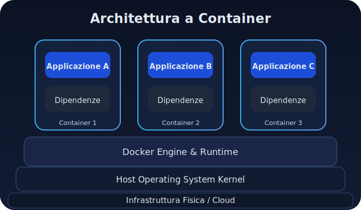

Docker Basics
Have you ever heard a colleague say "yeah, okay, but it works on my computer" and wondered why that happens? Or spent hours configuring an environment that seemed identical to your colleague's? Well, this article stems from that very experience: from the desire to understand why Docker has become so important and how it has changed the way software is developed.
Abstract
This article is just the first in a series of articles where I want to explain why containers are so important. In this series, the goal is to explain clearly (but technically accurately) why Docker was created, how it works, and when to use it or not use it.
1. The evergreen "It works on my PC" problem
One of the most classic problems in software development is summarized by the classic phrase "yeah, but it works on my PC, you'll see you can get it to run on yours too". For those reading this article who are unfamiliar with this problem, it essentially occurs when code that runs without issues on a developer's computer fails in a different environment (which could be a colleague's machine, or a test or production server). I'll briefly summarize an article that, in my opinion, analyzes the typical causes well. According to Dave Nicolette, there are configuration differences and environment drift. Over time, during development, libraries, configurations, and dependencies accumulate, making the environment unique.
What does this cause?
Well, small discrepancies, such as different versions of a database, a local configuration file not replicated elsewhere, generate bugs that are difficult to pinpoint. Added to this is the so-called dependency hell, or the "jungle" of conflicting software dependencies: the more a project grows, the more it depends on external libraries (with potentially incompatible versions), creating a management nightmare. What happens is that, if you find yourself in "multi-developer" environments, these divergences cause delays and sleepless nights to resolve errors that "worked locally."
Let's say that in addition to countless anecdotal testimonies, the phenomenon is so widespread that it is the subject of irony, and some Agile teams, as Dave Nicolette recounts, had introduced playful penalties for those who used this excuse (like paying a small fine into the snack bar fund). But beyond the jokes, the real impact is significant: when dev/test/staging environments are not aligned, rework and delays occur. Recent studies indicate that 69% of developers lose at least 8 hours a week due to technical inefficiencies, including environment differences and broken builds due to inconsistent configurations.
In essence, before Docker, many companies saw their development flow slow down because every "it works on my PC" meant time lost redoing setups or chasing phantom bugs.
Now let's see what was done before Docker was born.
2. Pre-Docker solutions
In a nutshell, before 2013 (the year Docker was born), developers had obviously already tried different approaches to avoid environment problems.
Traditional Virtual Machines (VMs) were the most common solution: duplicating entire operating systems in isolated virtual machines, on which to recreate the same dependencies. Tools like Vagrant simplified the definition and sharing of these VMs (via configuration files and versioned "base boxes"), while Configuration Management tools like Ansible, Puppet, Chef automated the installation of packages and configurations on VMs or real servers. In theory, these solutions allowed achieving the goal of having consistent environments, but in practice, they were often complex or inefficient. For example, starting a VM means allocating resources for an entire guest operating system: it's "like renting an entire apartment building just to bake one pizza". This caused assured isolation, to be sure, but there was enormous waste of resources and inherent slowness. Even tools like Vagrant, while facilitating the creation of reproducible environments, required maintaining heavy VM images (several gigabytes) and complex provisioning scripts to install dependencies, with long startup times (minutes). Similarly, automatic configuration systems lowered the manual error rate, but had very steep learning curves and introduced an additional layer of abstraction.
In summary, before Docker, a solution that was simultaneously simple, lightweight, and portable was missing: VMs guaranteed isolation but at the cost of high overhead; pre-container scripts and tools made installations replicable, but did not completely eliminate the problem and were not very easy to understand and use (and it was especially easy to make mistakes).
Obviously, you could trust me, but I think it's better to provide you with some more data. A VM does replicate an entire environment, but each VM contains an entire OS and requires a hypervisor to run, resulting in high CPU, RAM consumption, and boot times. To make the process more agile, Vagrant was used to "code" VM creation via a single CLI and shared declarative files (Vagrantfile), improving repeatability compared to manual machine creation.
Ultimately, in the pre-Docker world, "the single box" to put everything needed and carry it around was missing: and this is precisely the revolutionary idea that Docker introduced.
For years, the motto or rather the joke was: "Let's ship the developer's computer to production", useful for exorcising the problem we described earlier. In the absence of better solutions, in fact, one ended up over-compensating: either by exaggerating with photocopy test environments (expensive and static), or by relying on long manual checklists (install X, set Y, remember patch Z…) which, however, sooner or later failed. There was a need for a more elegant and reliable mechanism to package applications and their dependencies, following the model of other sectors (for example, electronics with Java virtual machines, or the ops world with VM images). Docker arrived to fill precisely this gap, leveraging existing Linux technologies but making them easy for developers to use.
Below is a comparative overview to better understand the pros and cons of the main solutions used before Docker:
| Solution | Advantages | Disadvantages |
|---|---|---|
| Virtual Machine (VM) | Complete isolation, replicable environment | Heavy, slow to start, consumes many resources |
| Vagrant | Automates VM creation, shareable environments | Depends on underlying VMs, complex provisioning |
| Ansible / Puppet / Chef | Automatic and consistent configuration | Steep learning curve, requires maintenance |
I hope it is now clear how impactful the arrival of Docker has been. Good, but now let's understand what Docker is.
3. What Docker is in simple terms
We can think of a Docker image as a LEGO set with its instruction manual for assembly: it's packaged, versioned, and identical for anyone who opens it. Once the box is open, you can assemble the set and place it on a table or a shelf. This assembled LEGO is the container. The beauty is that you get the same result regardless of where you place it. If you disassemble or break it, the instruction set (the image) remains intact, and you can reassemble as many as you want, even on different tables (different machines), always getting the same result.
Docker is an open-source platform that introduced the concept of containers into mainstream software development. In simple terms, a container is a lightweight, executable package that includes everything needed to run an application: code, runtime, system libraries, configurations - all isolated from the rest of the system (but we'll look at this in detail in the next article). We can imagine it as a kind of "disposable" mini-computer at the application level: instead of virtualizing an entire machine with its operating system (as a VM does), the container reuses the host system's kernel and virtualizes only the user space (processes, file system, network) necessary for the app. This makes it extremely efficient and portable: a container started on a developer's laptop will run the same way on a Linux server in the cloud, because it carries its own dependencies in a standardized form.
In Docker, this standardization is achieved through images and container runtimes: a Docker image is like an immutable and versionable snapshot of an environment with a certain application ready to use, while a container is the active instance of that image. In other words, using an example I found on Reddit, "the image is a Live-CD, and the container is the computer booted from that Live-CD". This is probably a suitable example for those who lived through the CD era.
In any case, images are built in layers and can be shared via centralized registries (e.g., Docker Hub), so teams can reuse common components. When executed, the container adds a writable layer on top of the read-only image layers, allowing the app inside to create temporary files, logs, etc., without modifying the base image.
For more accurate definitions, we will return to them in a future article. Let's now understand the difference between a container and a virtual machine.
4. Container vs. Virtual Machine
At this point, it's useful to clarify the technical differences between a container and a VM (Virtual Machine), because I have often seen these concepts confused, or, even more often, people not understanding when to use one instead of the other.
Let's start with the reason for the confusion. Let's say that both containers and VMs isolate applications in a dedicated environment, but they do so with very different approaches. I will use diagrams I found on this link and have adapted.
- In a classic VM, isolation is achieved by completely virtualizing the hardware: multiple VMs can run on a single host, each with its own guest OS (guest operating system) and its own applications. This means that if I have 5 VMs on the same server, I am actually running 5 complete operating systems (Linux, Windows, etc.) on top of a hypervisor layer.

Figure 1: Each VM encapsulates the application, dependencies, and an entire guest operating system above the hypervisor.
- A container, on the other hand, does not have its own complete operating system inside: it shares the host OS kernel and virtualizes only the space necessary to run the app's processes, thanks to mechanisms like Linux kernel namespaces and cgroups (which isolate resource visibility and resource consumption, respectively).

Figure 2: Each container includes the application and dependencies, relying on the Docker runtime and the shared host kernel.
In summary, a VM "believes" it is a separate computer (complete with its own kernel, virtual drivers, etc.), while a container is more like an encapsulated process in an isolated bubble on the common kernel.
The VM representation (Figure 1) highlights how the application runs on an entire guest operating system, which communicates with the hypervisor and finally with the real hardware. In the container diagram (Figure 2), however, the application and libraries communicate directly with the host kernel through the runtime, without the need for a complete guest OS. This difference allows containers to be much lighter than VMs, eliminating the intermediate layer of the duplicated operating system. Furthermore, a container consumes less RAM and CPU and starts in a few seconds, compared to the minutes often required to boot a VM.
A practical proof? If I execute uname -a inside a Docker container, I will see the same kernel as the operating system I am working on: Linux containers indeed use the host system's kernel (as demonstrated by the identical output inside and outside the container). VMs, on the other hand, present a distinct kernel (the guest). This offers more system-level isolation, but with the overhead of maintaining that separate operating system.
In terms of performance, containers certainly win in "lightness." Let me explain better. They do not have to reserve fixed memory and CPU upfront as VMs often do, but consume only the resources strictly necessary for the app, efficiently sharing unused ones. Furthermore, we can launch dozens of containers without a huge impact, while running dozens of VMs would be prohibitive, precisely because containers avoid duplicating the "dead weight" (allow me this definition given that Halloween is approaching) of each machine.
On the other hand, a VM guarantees total isolation: each VM is like its own fortress, and this can be preferable for running untrusted code or with stringent security requirements. The VM's "boundary" is harder to breach than a container, which, we recall once again, shares the host kernel.
The VM does nothing but virtualize entire hardware and can do everything a computer does (in fact, initially, the cloud was based on VMs), while a container virtualizes the operating system and provides only what is needed to run the app, nothing more, or rather, nothing superfluous.
An intuitive way to understand the difference is through an analogy we already saw at the beginning: "Running a VM is like renting an entire apartment building just to cook a pizza; using a container is like renting a single kitchen in a shared restaurant". The VM offers complete isolation (no one will disturb your "pizza" because you are in the building alone), but at a high cost in terms of unused resources. The container shares the common infrastructure (the oven, utilities - i.e., the kernel) with other containers, but maintains its small separate space to operate. In practice, Docker chose a compromise that we can define as "right" for most cloud-native applications, which is process-level isolation, sufficient to avoid conflicts, without the heaviness of simulating an entire computer every time. This is why in the DevOps world, in a few years, we went from having "one VM for each service" to having "one container for each microservice": a paradigm shift that made it possible to scale and manage distributed systems with much more agility.
5. Why Docker was a turning point
At this point, I think it's clear why Docker was seen as a turning point in IT.
In 2013, Docker took existing Linux technologies (LXC containers, union filesystems) and transformed them into a tool accessible to all developers, forever changing the DevOps landscape.
Three key aspects summarize its impact:
- (a) Portability: the motto "works on my machine" transformed into "works anywhere" thanks to containers that guarantee environment parity;
- (b) Developer Experience: instead of manual scripting, Docker offers a clean and declarative CLI (with Dockerfile, docker run, etc.) that makes using containers simpler than VMs;
- (c) Ecosystem: with Docker Hub, the first public image registry was born, essentially an "app store" of ready-to-use components shared by the community.
What I've noticed is that this combination of factors led Docker to become synonymous with containers and to be adopted everywhere in a very short time, accompanying and enabling trends such as the DevOps movement, automated CI/CD pipelines, and microservices architecture.
At a historical moment when companies were breaking down monolithic applications into many independent services, Docker provided the ingredient that made it possible to put each microservice into a container. This made it easy to distribute and replicate various microservices in production.
All major cloud providers have embraced Docker: today it is rare to find a PaaS that does not support Docker containers. This universal standard has freed companies from specific environment lock-in: if an app is containerized, you can run it on AWS, GCP, Azure, on-premise, in short, anywhere there is a compatible runtime and achieving the same portability that shipping containers have given to the global supply chain world.
If we want to measure success, Docker has certainly brought gains in speed and efficiency: just consider that in Docker's first public demo (PyCon 2013), it was shown how to "containerize" a Redis database in a few seconds, a process that previously required hours of manual configuration. Similarly, releasing a new application version has become faster and safer: instead of having to reconfigure an existing server (risking breaking something), with Docker, a new image is built and deployed, knowing that it includes exactly everything needed.
In conclusion, today it is natural for a development team to think in terms of images and containers when working on new applications: this has improved collaboration between developers and system administrators who now speak a common language. It has also paved the way for technologies like Kubernetes that orchestrate thousands of containers, keeping systems reliable and scalable. The "Docker revolution" has also democratized access to complex environments: a junior developer can run the entire stack of an app locally (database, cache, backend, etc.) with a few Docker Compose commands, something unthinkable a dozen years ago using only VMs and other alternatives defined at the beginning.
Let's say that now we understand the importance of Docker and how useful it is. Now I think it's useful to conclude the article by best understanding when Docker is not needed.
6. When Docker is not needed
It must be clear that, as powerful and fashionable as Docker is, it is not a magic wand suitable for every scenario. There are cases where introducing Docker adds more complexity than benefits, or situations where a simpler solution is more than enough. For example, for very simple applications (a small API or a static site) or for personal projects, using Docker risks being just a way to unnecessarily complicate things. Obviously, I'm not the only one saying this, but also some experts. In these cases, configuring the app directly on the host operating system (or using lightweight virtual environments like venv for Python, etc.) can be faster and more straightforward.
Other cases where Docker might not be needed are reported in this link. Docker adds an extra layer and, in certain scenarios (unconfigured memory limits, I/O overhead), can even slow down or destabilize the system when the kernel runs out of memory. In these cases, a "native" distribution of the service can be more straightforward. When absolute priority is security and total isolation, remember that containers share the host kernel. A breakout would have "elevated" privileges. If VM-like isolation is a non-negotiable requirement, Docker might not be the right tool.
If you are developing a somewhat complicated desktop GUI application, Docker tends to be an inconvenient option: it is designed for "headless" and CLI processes. Of course, workarounds exist (X11 forwarding, some cases with QT on Linux), but these are cumbersome solutions: in many contexts, native installation is simpler.
When the app manages a lot of persistent and valuable data, the "stateless" approach of containers doesn't help: data in the container's writable layer is ephemeral and tied to the host. The volume mechanism can be used, but management remains more intricate than storage "outside" the container.
The reasons for not using Docker can be summarized in a few points:
(a) Pure Performance: Docker does not make your code "faster"; in fact, it adds an extra layer. For workloads requiring maximum performance (e.g., HPC scientific computing, real-time 3D rendering) or when every millisecond counts, running natively on the host (or in an optimized VM) may be preferable. Docker, in fact, could introduce a slight overhead and consume resources if not configured with adequate limits.
(b) Security & Isolation: Although Docker offers some isolation, all containers share the same host kernel. Therefore, a kernel vulnerability or a container escape can compromise the entire system. Furthermore, the Docker daemon often runs with elevated privileges; if a malicious process "escapes" the container, it would gain root privileges on the host. In contexts where security is very important (perhaps in systems with sensitive data subject to compliance), a VM can offer stronger isolation (although Docker is closing the gap with techniques like rootless mode, gVisor, etc.).
(c) Data Persistence and Operational Complexity: Containers by their nature are ephemeral. This means that if you need to manage a lot of persistent data or complex state, you end up having to add volumes, external backups, etc., otherwise destroying a container means losing data. For some, the containerized approach makes the system more "opaque." For trivial operations like modifying a configuration file or executing a system command, it might require "entering" the container or rebuilding the image, which is less immediate than SSHing into a traditional VM. It's no coincidence that some joke that "Docker is only useful for those who don't know Linux well and want to avoid learning it," and that for many small implementations "it adds a totally unnecessary layer of abstraction". This is an extreme view, but it highlights how for simple projects, a normal provisioning script could achieve the same result more transparently.
We have reached the end. The decision whether or not to use Docker should, in my opinion, always be based on a cost-benefit analysis in the specific context. Docker is fantastic for ensuring consistency and scalability in complex cases, but it is not mandatory to use it always and everywhere.
A small team deploying a single monolithic application a couple of times a year can perhaps easily manage a manually configured server or a reference VM, without introducing containers. After all, the goal is to solve problems, not to add "trendy" technology, or rather, just because everyone else is doing it today. I read about it on Reddit and also in a Medium article. Some developers spend more time fighting with YAML and containers than writing code. In other words, Docker is not a universal panacea. It should be used when it brings clear value: portability, consistency, scalability, or rapid isolation. Otherwise, simpler alternatives exist: from using lightweight virtual environments, to more complex but more secure ones, like deployments on traditional VMs, up to modern serverless services. The important thing is to remember that every tool has its place.
In conclusion, Docker is powerful, but it's not a magic wand that solves everything. It's a tool that performs best when truly needed: when there are complex environments to replicate, large teams, or distributed systems to orchestrate. But if you use it just because "everyone uses it," you risk complicating your life. After all, even the most brilliant technology loses its meaning if it doesn't serve the problem you're facing.
A good engineer chooses the least complex solution capable of solving the problem. Docker makes sense when the game is worth the candle; when it's not needed, they should choose the simplest and most effective option for themselves and their goal.